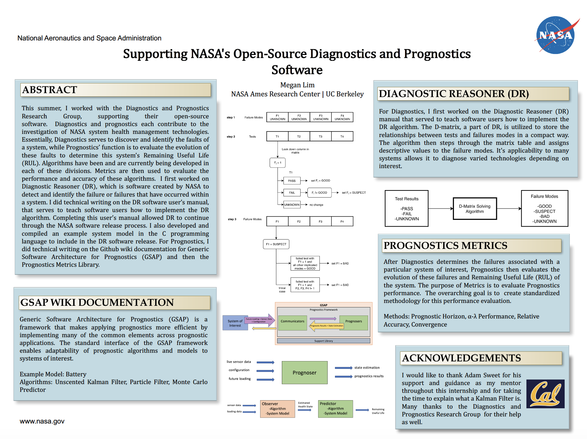

NASA Ames Research Center
Tech Intern
My NASA internship was out of this world! I worked with the algorithms implemented in the Diagnostics and Prognostics Research Group at NASA. The software user manual that I wrote for one of the Diagnostic algorithms, Diagnostic Reasoner, was released in the US along with the open source software. I also wrote the 19 page Github wiki for GSAP, a major Prognostics architecture, and Metrics library wiki. Later, I was one out of 5 interns selected to present my project at the Intelligent Systems Division Showcase where I was interviewed for Kiwoba Allaire's video to give advice to young girls on how to pursue STEM.
